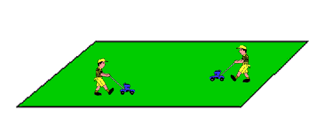

The Lazy Gardener Puzzle
It takes two gardeners 8 days to mow a lawn.
One is lazy and one is energetic.
The energetic one would only take 12 days to mow it on his own.
How many days would the lazy gardener take to mow the lawn on his own?
It takes two gardeners 8 days to mow a lawn.
One is lazy and one is energetic.
The energetic one would only take 12 days to mow it on his own.
How many days would the lazy gardener take to mow the lawn on his own?